← Índice de los 69 tutes de IDA
Tute 47 · Más teoría de heap
se conecta con: Vulnerabilidades (defensivo)
INTRODUCCIÓN AL REVERSING CON IDA PRO DESDE CERO PARTE 47.
EJERCICIO de la parte 44
Vamos a tratar de aclarar algunas cosas que aún no mencionamos del tema heap y que son necesarias, lo haremos mirando nuevamente el ejercicio practica 44 que hablamos mirado en Windows 7, lo volveremos a mirar en el mismo so.
Es bueno notar que la forma de manejar el heap hay cambiado mucho de XP a Windows 7, y tiene más cambios aun hasta Windows 10, por lo cual métodos de explotación que son válidos en uno, pueden no serlo en el otro.
También es cierto que lo exploits que explotan un heap overflow, hay que lucharlos bastante, no son sencillos la mayor parte de las veces y no siempre funcionan el 100% delos intentos.
Bueno miraremos el ejercicio de la parte 44.
http://ricardonarvaja.info/WEB/INTRODUCCION%20AL%20REVERSING%20CON%20IDA%20PRO%20DESDE%20CERO/EJERCICIOS/PRACTICA_44.7z
Usaremos el Windbg fuera de IDA.
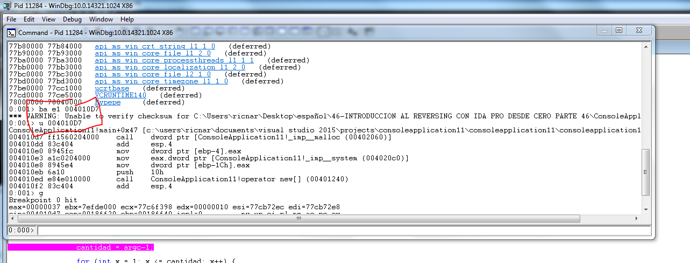
Ya habíamos visto que hacia un malloc inicial en 0x004010D7 asi que coloco un breakpoint en el windbg con
ba e1 0x004010D7
Una vez que para ya sabemos que el size era el número que le pasábamos multiplicado por 4.
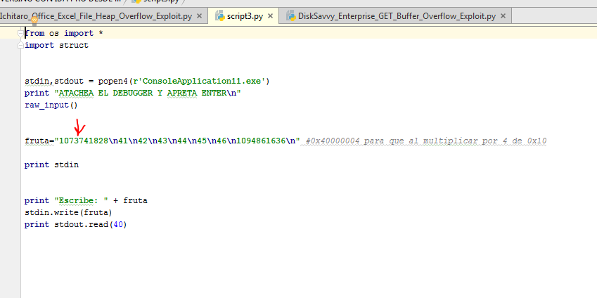
El numero ese pasado a hexadecimal es
hex(1073741828)
'0x40000004'
Al multiplicar por 4 daba 0x10
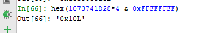
Asi que alocara 0x10.
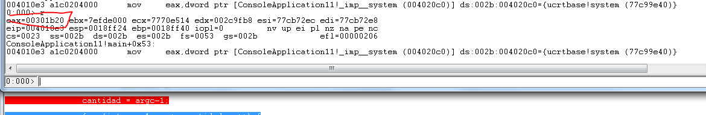
Al pasar por encima del malloc con f10 veo en mi caso que allocó en 0x00301b20

Vemos que pertenece a un bloque de tamaño 0x10 de UserSize, o sea sera 0x10 el espacio que reserva de memoria para utilizar por el usuario, sin contar el header.
Usando !heap -a 0x2c0000 para ver los chunks del heap.
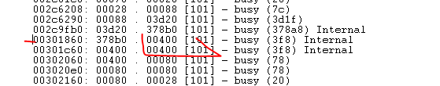
Vemos que hay un chunk en 0x301860 de largo 0x400 que tendría mi dirección dentro, pues 0x301b20 esta incluido dentro de ese bloque que empieza en 0x301860 y sumandole 0x400 terminaría en 0x301c60.
hex(0x301860+0x400)=0x301c60
Veamos que nos dice el mona en el mismo caso.
Lo cargo con
.load pykd.pyd
Y luego
!py mona.py heap -h 0x2c0000 -t chunks
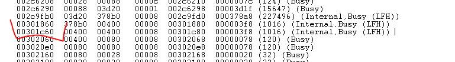
Vemos que nos muestra al igual que el windbg el mismo chunk de 0x400 salvo que ademas de Internal nos dice que es LFH.
LOW FRAGMENTATION HEAP
Se puede escribir muchísimos tutoriales de LFH, es complejo trataremos de no marearlos demasiado y vamos a ir en partes, esta será la primera, en la parte siguiente trataremos de ver si podemos entender y seguir una allocacion.
Realmente el LFH es como un heap especial dentro del heap estándar, con reglas un poco distintas, la idea es tener un heap para evitar la fragmentación o sea que tengas bloques allocados desperdigados en la memoria y muy separados.
La fragmentación del heap ocurre cuando hay allocados pequeños bloques no contiguos. Cuando esto sucede, las asignaciones de memoria pueden fallar, aunque puede haber suficiente memoria total en el heap para satisfacer la solicitud. Sin embargo, como ningún
bloque de memoria libre es lo suficientemente grande, la solicitud de asignación falla.
Para aplicaciones con poco uso de memoria, el heap estándar es adecuado no habrá problema, allí las asignaciones no fallaran debido a la fragmentación del heap. Sin embargo, si las aplicaciones asignan memoria con frecuencia utilizando tamaños de asignación diferentes, estas asignaciones pueden fallar debido a la fragmentación de heap.
Veremos unas cuantas tablas y en las próximas partes trataremos de comprender como el sistema toma la decisión de allocar en el LFH o en el HEAP estándar y como trabaja.
Tómenlo con paciencia a nadie le gusta tragar todo esto jeje, lo haremos poco a poco en la misma practica que tenemos detenida en el Windbg.
HEAP ESTANDAR Y LOW FRAGMENTATION HEAP WINDOWS 7.
Ya teniendo la dirección base del heap podemos ver su contenido con
dt _HEAP dirección
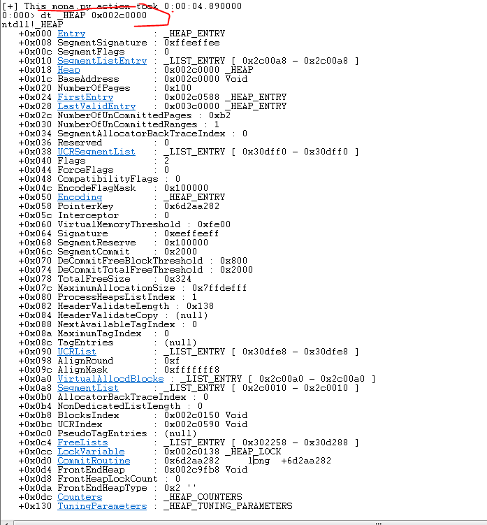
Ahí está la tabla principal del heap que se accede con dt _HEAP y la dirección del mismo que en mi caso es 0x2c0000.
Vemos que en la posición 0xB8 esta BlocksIndex que es un puntero a otra tabla, en mi caso dicha tabla está en 0x2c0150, o sea 0x150 desde el inicio del heap.
+0x0b8 BlocksIndex : Ptr32 Void
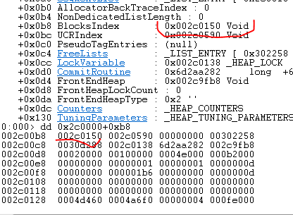
Para ver el contenido de esta tabla BlocksIndex se usa
dt _HEAP_LIST_LOOKUP dirección
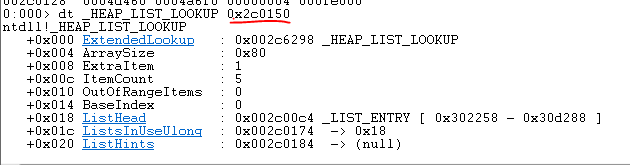
Trataremos de mostrar las tablas y explicar solo lo minino necesario, ya volveremos más adelante con esta tabla.
La siguiente tablita importante sale de la tabla principal del valor FrontEndHeap
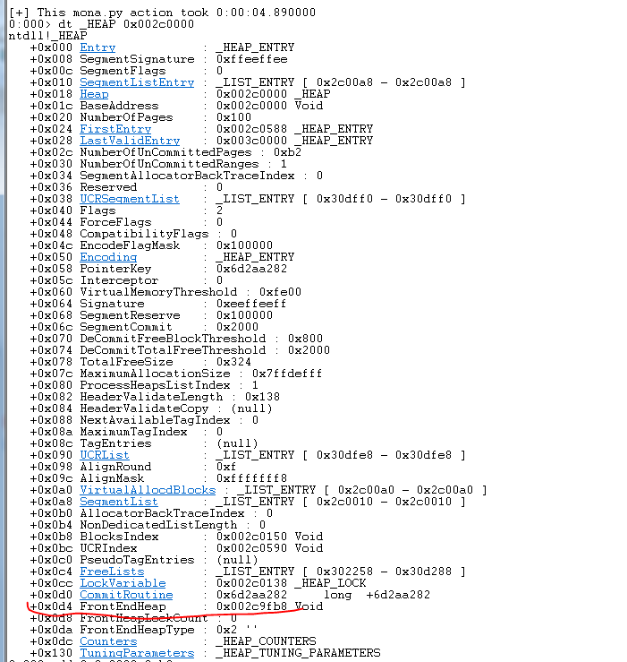
Vemos que en mi caso apunta a 0x2c9fb8, recordemos que al buscar mi chunk en la lista.
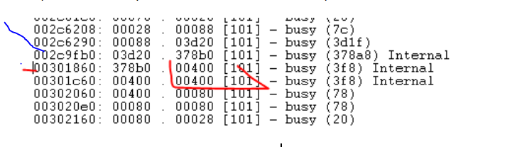
Casualmente en 0x2c9fb0 empezaban esos chunks Internal LFH, esto indica la posición del LOW FRAGMENTATION HEAP que es el FRONTEND HEAP, mientras que el heap estándar es llamado BACKEND HEAP.
Aquí se ve claramente que el LFH es un heap dentro del otro heap, empieza allí tal cual fuera un chunk más del heap principal, pero dentro tiene otro heap.
Sigamos adelante.
Para ver el contenido del LFH apuntado por FrontEndHeap se usa
dt _LFH_HEAP dirección
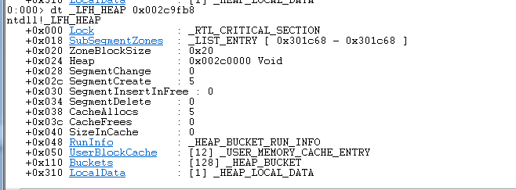
Ya queda poca paciencia jeje.
Como curiosidad vayamos apuntando que el offset 0x18 SubsegmentZones tiene un puntero al tercer bloque INTERNAL LFH.
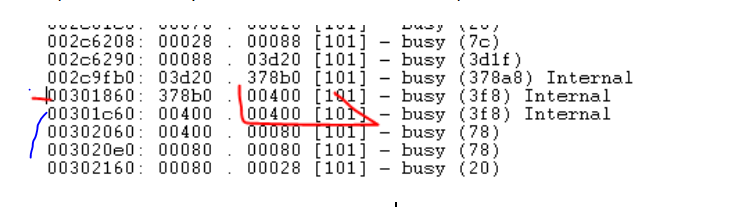
Ahí dentro del LFH hay un par de estructuras mas que son importantes una es _HEAP_LOCAL_DATA que esta en el offset 0x310, cuyo contenido de puede ver con
dt _HEAP_LOCAL_DATA
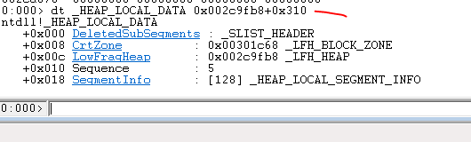
Vemos que SegmentInfo es una lista de 128 de largo veamos que hay ahí, en el mismo windbg clickeando en SegmentInfo, nos muestra la lista, sino con
dt _HEAP_LOCAL_SEGMENT_INFO
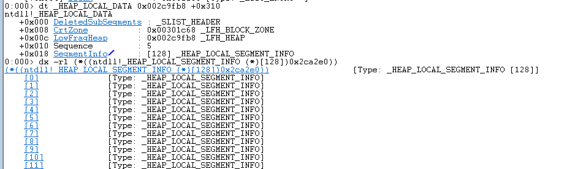
y pasando el mouse por encima de los números [0], [1], etc nos muestra la dirección.
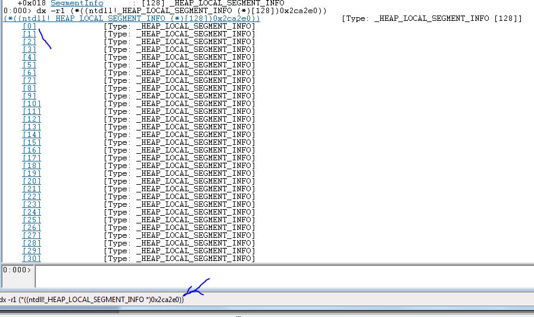
Ese seria el primer Local Segment Info, podemos ver que significa su contenido haciendo click por ejemplo en el [0]
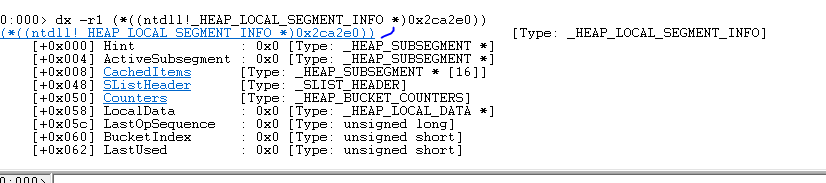
Vemos que hay una lista llamada CachedItems en el offset 0x8 igual podemos hacer click allí, en mi caso en el primer SegmentInfo empezara en 0x2ca2e8.
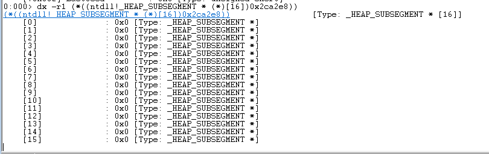
Vemos que cada uno es un _HEAP_SUBSEGMENT.
Para ver el contenido de uno hay que usar
dt _HEAP_SUBSEGMENT dirección
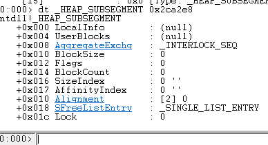
Y despues de todo esto llegamos a donde queremos dentro de AggregateExch que esta en el offset 0x8 esta _INTERLOCK_SEQ eso se puede mostrar con
dt _INTERLOCK_SEQ dirección
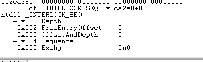
También haciendo click en el windbg
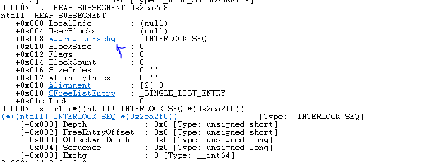
Bueno el tema era llegar hasta FreeEntryOffset en este caso es cero, anotemos bien como llegar hasta aquí, si vemos la definición de este valor.
FreeEntryOffset – This 2-byte integer holds a value, when added to the address of the _HEAP_USERDATA_HEADER, results in a pointer to the next location for freeing or allocating memory.
O se que depende de este valor cual sera el siguiente bloque que allocara o liberara, se le suma a otro que es _HEAP_USERDATA_HEADER, veamos donde esta ese.
Ese se llega de la misma tabla anterior solo que esta en el offset 0x4 UserBlocks
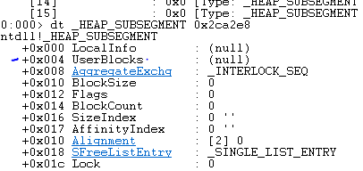
Y se dumpea con
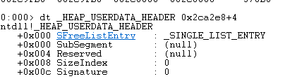
Bueno vamos obteniendo los valores para armar el rompecabezas, vemos que UserBlocks esta justo arriba de _INTERLOCK_SEQ que es el que tiene el puntero a FreeEntryOffset con lo que overflodeando la data de un chunk se podría pisar el mismo y alterar el próximo chunk que te de para allocar, aquí vemos en la imagen un poco mas claro.
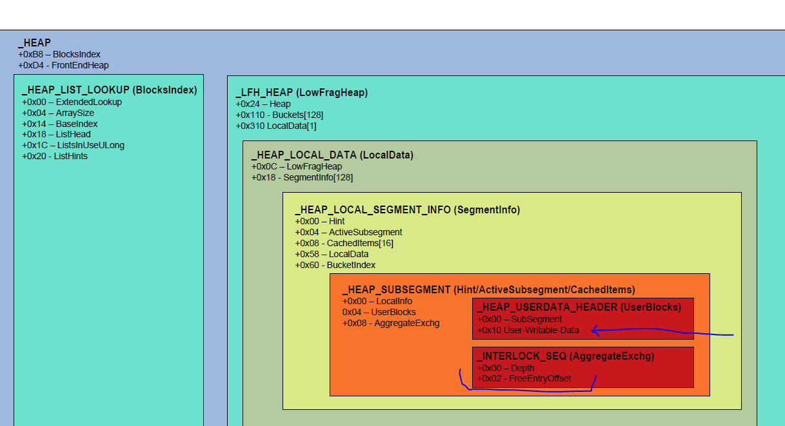
Ali en la imagen se ve mas claro se ve el header _HEAP_USER_DATA que habíamos visto, justo debajo viene la zona escribible por el usuario, y justo debajo esta la estructura _INTERLOCK_SEQ que es la que tiene el valor que decide cual es el siguiente que te va a dar si allocas el mismo size.
Con esto tenemos una vista de las tablas principales y sus valores en la oficina parte veremos si nos ayuda para estudiar como decide alocar en el heap estándar o en el LFH.
Hasta la parte 48
Ricardo